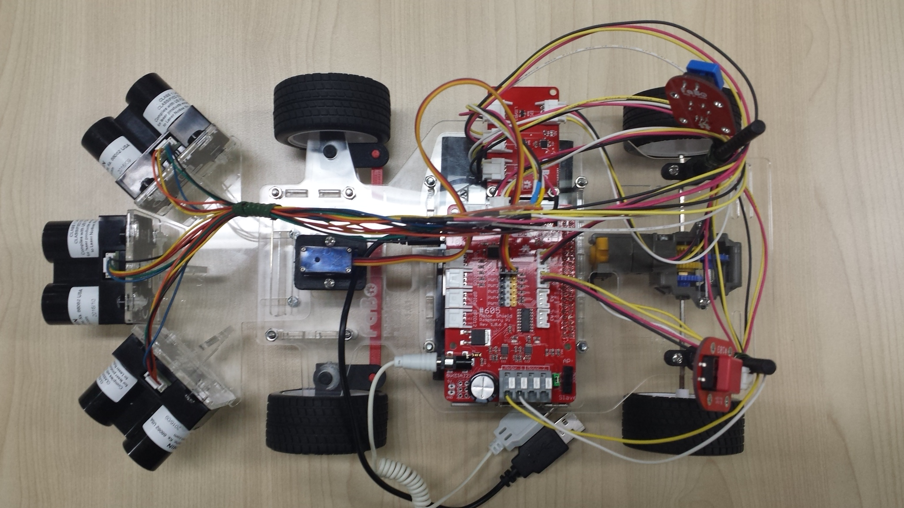
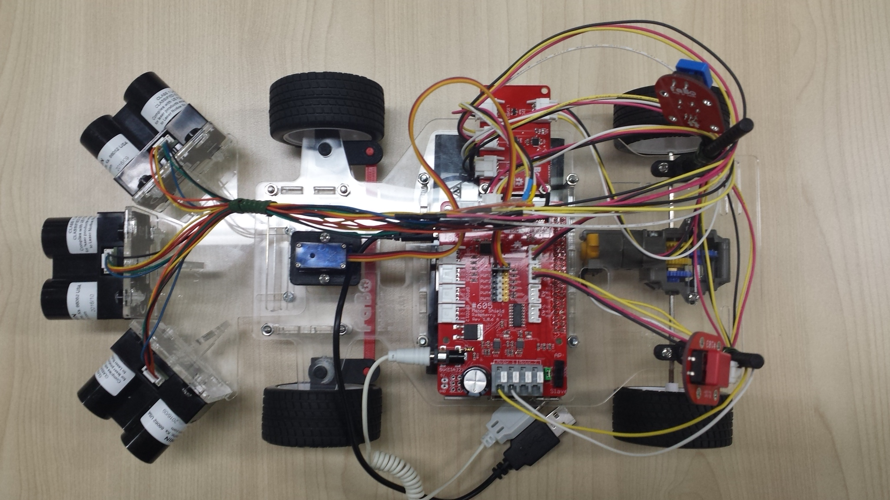
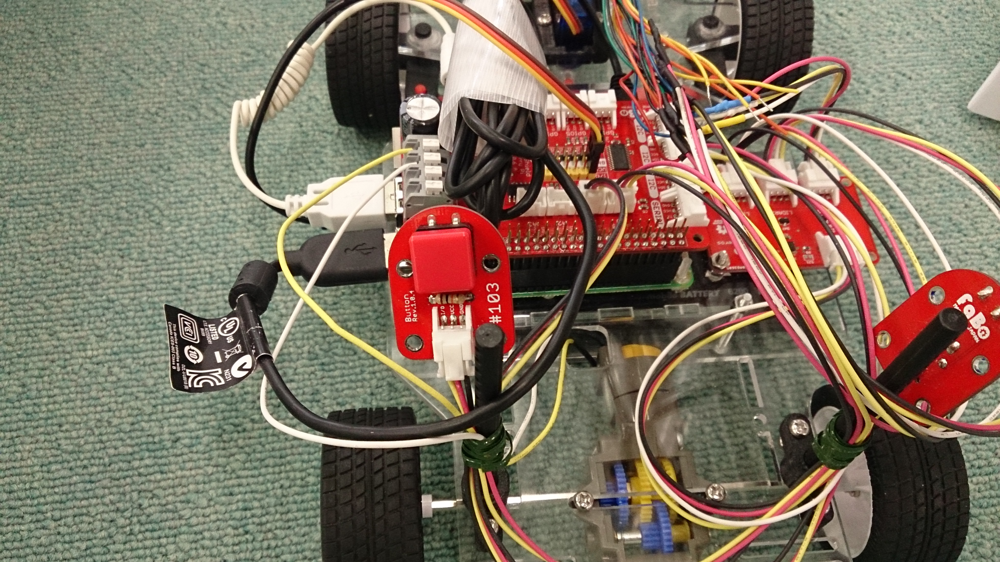

【タイトル】
レベル1：Fabo TYPE1 ロボットカー制御
【目標】
3つの距離センサーから値を取得し、IF文で進行方向を判断してロボットカーを自走させる
【画像】
 

【動画】
走行デモ動画：
【実行環境】
* Fabo TYPE1 ロボットカー
* Fabo #605 Motor Shield Raspberry Pi Rev 1.0.1
* Fabo #902 Kerberos ver 1.0.0
* Fabo #1202 Robot Car Rev. 1.0.1
* Fabo #103 Button
* VL53L0X or Lidar Lite v3
* Tower Pro SG90
* Raspberry Pi3
* Stretch Lite or Jessie Lite
* docker
* Ubuntu
* Python 2.7
* FaBoPWM-PCA9685-Python
* FaBoGPIO-PCAL6408-Python
* VL53L0X_rasp_python
【実行】
* インストール方法
* コースの準備
* 実行方法
【目次】
* [Hardware] 距離センサーLidarLite v3について
* 取得できる距離、値、誤差、測定周期
* [Python] 簡単なIF文での判定を作る
* 簡単なIF文での判定
* [Python] 車両を制御する
* モーターの速度制御
* ハンドル制御
* [Python] 距離センサーの値を取る
* 距離センサーの値を取る
* [Python] 自走コードを作成する
* 距離センサーの値を取る
* 進行方向を判断する
* 速度調整を入れる
* ハンドル角調整を入れる
* 車両を制御する
* 後進を追加する
* 停止ボタンを追加する
* 開始ボタンを追加する
* ディレクトリとファイルについて
インストール方法
インストール済みのロボットカーを用意しているので省略します。
コースの準備
コースとなる壁は、距離センサーが発するレーザーが反射できるような素材で作ります。
足元での突起物となるので、人がぶつかった時の安全性や価格、レイアウト変更のしやすさ、修復しやすさを考えて画用紙とクリップで作ってあります。
ジグザグに織ることで、収納しやすさ、立たせやすさ、レイアウト変更のしやすさ、レーザー反射しやすさも獲得しています。
道幅は直線なら狭くても大丈夫ですが、カーブでは側面にセンサーが付いていないため、内側を巻き込みやすくなっています。
そのため、カーブは広めに作り、狭い道への入り口も誘導しやすいように広めに作っておきます。
実行方法
1. ロボットカーのRaspberry Pi3にログインします
USER:pi
PASSWORD:raspberry
ssh pi@192.168.xxx.xxx
2. rootになってdockerコンテナIDを調べます
sudo su
docker ps -aCONTAINER ID IMAGE COMMAND CREATED STATUS PORTS NAMES
2133fa3ca362 naisy/fabo-jupyter-armhf "/bin/bash -c 'jup..." 3 weeks ago Up 2 minutes 0.0.0.0:6006->6006/tcp, 0.0.0.0:8091->8091/tcp, 0.0.0.0:8888->8888/tcp hardcore_torvalds
STATUSがUpになっているコンテナIDをメモします。
3. dockerコンテナにログインします
docker exec -it CONTAINER_ID /bin/bash
docker exec -it 2133fa3ca362 /bin/bash
CONTAINER_IDにはベースイメージがnaisy/fabo-jupyter-armhfの2133fa3ca362を使います。
4. ロボットカーのディレクトリに移動します
cd /notebooks/github/RobotCarAI/level1_car/
lstotal 60
160688 4 ./ 125618 16 README.md 160720 4 fabolib/ 160809 4 lib/ 127092 4 start_button.py
123628 4 ../ 160708 4 document/ 160808 4 generator/ 127056 12 run_car_if.py 160810 4 test/
5. ロボットカーを起動します
python start_button.py
6. 走行開始するには、ロボットカーの青いボタンを押します

7. 走行停止するには、ロボットカーの赤いボタンを押します

Ctrl + c でstart_button.pyを終了します
8. ソースコードを修正して、ロボットカーを再度走らせます
進行方向の判断処理を変更して、ロボットカーを走らせてみます。
vi run_car_if.py
ソースコード：./run_car_if.py
1 2 3 4 5 6 7 | # 書き換え前 シンプルな判断処理を読み込む from generator.simplelabelgenerator import SimpleLabelGenerator as LabelGenerator #from generator.labelgenerator import LabelGenerator # 書き換え後 複雑な判断処理を読み込むように、#を入れ替えてコメントアウトを変更 #from generator.simplelabelgenerator import SimpleLabelGenerator as LabelGenerator from generator.labelgenerator import LabelGenerator |
走行は5.6.7.の手順になります。
viエディタについて
viエディタは初期のUNIXからあるテキストエディタです。しかし、2002年までは自由に入手出来なかったため、フリーのviライクのエディタが登場しました。その中でもvimは多くのOSに移植され、Ubuntuではviコマンドはvimを起動します。
UNIX系のサーバ設定ファイルを手で書き換える時は、どのサーバでも使えるという点からviコマンドを使うので、簡単な使い方を覚えておきます。
- コマンドモードと編集モードの切り替え (vi起動時はコマンドモード)
編集モードに切り替え：コマンドモード時、'i'もしくは'a'もしくは'o'を押す
コマンドモードに切り替え：編集モード時、'ESC'を押す - 保存して終了
コマンドモード時、':wq'を押す - 保存せずに終了
コマンドモード時、':!q'を押す - 検索
コマンドモード時、'/検索したい文字列'を押す
これ以降について
level1_carでは、ロボットカーの制御方法についての内容になります。
level1_sensorsでは、書き換え後となるLabelGeneratorの進行方向の判断処理についてと、その判断をニューラルネットワークに覚えさせる内容になります。
level1_demoでは、ニューラルネットワークで判断処理を行い、ロボットカーを制御する内容になります。
[Hardware] 距離センサーLidarLite v3について
CLASS1 LASERで距離を計測する機器。
取得できる距離、値、誤差、測定周期
- 測定可能距離は40m
- cm単位の整数値で取得
- 測定誤差は5m以内で2.5cm、5m以上で10cm
- 測定周期は50Hz=0.02秒間隔
仕様書：https://static.garmin.com/pumac/LIDAR_Lite_v3_Operation_Manual_and_Technical_Specifications.pdf
[Python] 簡単なIF文での判定を作る
簡単なIF文での判定
3センサー値を入力に、STOP,LEFT,FOWARD,RIGHTを識別出来るように値を返すIF文を作ります。
0:STOP,1:LEFT,2:FOWARD,3:RIGHTと定義しますが、level1_sensorsのNeural Networksのone hot valueの値に合わせておくために、
one hot value(配列)の最大値を持つindex番号が0-3の値(0:STOP,1:LEFT,2:FOWARD,3:RIGHT)となります。
1 | value = np.argmax([1,0,0,0]) # value = 0 |
ラベル ジェネレータ：./generator/simplelabelgenerator.py
1 2 3 4 5 6 7 8 9 10 11 12 13 14 15 16 17 18 19 20 21 22 23 24 25 26 27 28 | # coding: utf-8 import numpy as np class SimpleLabelGenerator(): def get_label(self,sensors): ''' sensors: [左センサー値,前センサー値,右センサー値] ''' if sensors[1] < 20: # 前方に空きが無い return [1,0,0,0] # STOP elif sensors[0] < 20: # 左に空きが無い return [0,0,0,1] # RIGHT elif sensors[2] < 20: # 右に空きが無い return [0,1,0,0] # LEFT else: # 全方向に空きがある return [0,0,1,0] # FOWARD generator = SimpleLabelGenerator() n_rows = 10 # 作成するデータ件数 sensors = np.random.randint(0,200,[n_rows,3]) # 範囲0-200の値で3つの値を持つ配列をn_rows個作る print("--- sensors ---\n{}".format(sensors)) csvdata=[] for i in range(n_rows): generator_result = generator.get_label(sensors[i]) csvrow = np.hstack((sensors[i],generator_result)) csvdata.append(csvrow) csvdata = np.array(csvdata) print("--- batch data ---\n{}".format(csvdata)) |
--- sensors ---
[[123 76 172]
[ 12 74 98]
[ 52 59 45]
[ 51 137 147]
[ 8 45 58]
[ 87 176 189]
[183 34 197]
[115 4 100]
[108 154 136]
[140 53 101]]
--- batch data ---
[[123 76 172 0 0 1 0]
[ 12 74 98 1 0 0 0]
[ 52 59 45 0 1 0 0]
[ 51 137 147 0 0 1 0]
[ 8 45 58 1 0 0 0]
[ 87 176 189 0 0 1 0]
[183 34 197 0 0 0 1]
[115 4 100 0 0 0 1]
[108 154 136 0 0 1 0]
[140 53 101 0 0 1 0]]
[Python] 車両を制御する
モーターの速度制御
車両動作確認コード：./test/car_test.py
1 2 3 4 5 6 7 8 9 10 11 12 13 14 15 | from fabolib.car import Car car = Car() try: for i in range(1,101): car.forward(i) time.sleep(0.1) car.stop() #モーターが惰性を含めて回転中は逆回転にすることが出来ないため、sleepを入れておく time.sleep(1) for i in range(1,101): car.back(i) time.sleep(0.1) car.stop() |
モーターの速度は1から100までの値で制御できます。
しかし、値が低いとモーターが動作しないため、進む際は40以上の値を設定します。
前進、後進、停止が可能です。
急に逆回転にするとモーターが回らなくなるため、逆回転にする場合は、モーターの回転が止まるまでsleepを入れておきます。
ハンドル制御
車両動作確認コード：./test/car_test.py
1 2 3 4 5 6 7 8 9 10 11 12 | from fabolib.car import Car car = Car() try: car.set_angle(90) time.sleep(1) car.set_angle(45) time.sleep(1) car.set_angle(90) time.sleep(1) car.set_angle(135) time.sleep(1) car.set_angle(90) |
ハンドル制御は45-135度の角度で指定します。
0-180度まで動作するサーボを使っていますが、真ん中の90度の位置でロボットカーを組み立てる必要があります。
ここは車両に合わせて微調整が必要になります。
パラメータ設定：./fabolib/config.py
1 2 3 | class CarConfig(): HANDLE_NEUTRAL = 95 # ステアリングニュートラル位置 HANDLE_ANGLE = 42 # 左右最大アングル |
[Python] 距離センサーの値を取る
距離センサーにはFabo #224 Distanceを使います。
今回3つの距離センサーを使うのですが、全てのセンサーは通電時に同じ物理アドレスとなっていますので、それぞれのアドレスを変更する必要があります。
このアドレス変更を自動的に行うために、Fabo #902 Kerberos基板を使ってアドレス変更を行ったうえで取得するライブラリを作成してあります。
距離センサーFabo #224 Distance用ライブラリ：./fabolib/kerberos_vl53l0x.py
距離センサーLidarLite v3用ライブラリ：./fabolib/kerberos.py
距離取得確認コード：./test/fabolib_kerberos_test.py
1 2 3 4 5 | from fabolib.kerberos_vl53l0x import KerberosVL53L0X as Kerberos kerberos = Kerberos() try: for i in range(0,300): distance1,distance2,distance3 = kerberos.get_distance() |
このコードを実行するには、Fabo #902 Kerberos基板とFabo #224 Distanceが必要になります。
LidarLite v3を使っている場合は、import部分を以下のように変更してください。
1 2 | from fabolib.kerberos import Kerberos #from fabolib.kerberos_vl53l0x import KerberosVL53L0X as Kerberos |
[Python] 自走コードを作成する
距離センサーの値を取る
距離センサーは0.02秒間隔で値が更新されるので、値を取ったら余裕を持って0.05秒のsleepを入れておきます。
車両自走コード：./run_car_if.py
1 2 3 4 5 6 7 8 9 10 11 12 13 14 15 16 | # 近接センサー準備 kerberos = Kerberos() LIDAR_INTERVAL = 0.05 # 距離センサー取得間隔 sec ... try: while main_thread_running: ... ######################################## # 近接センサー値を取得する ######################################## distance1,distance2,distance3 = kerberos.get_distance() sensors = [distance1,distance2,distance3] ... time.sleep(LIDAR_INTERVAL) except: |
進行方向を判断する
車両自走コード：./run_car_if.py
1 2 3 4 5 6 7 8 9 10 11 12 | from generator.simplelabelgenerator import SimpleLabelGenerator as LabelGenerator #from generator.labelgenerator import LabelGenerator ... # IF準備 (学習ラベル ジェネレータ) generator = LabelGenerator() ... ######################################## # IF結果を取得する ######################################## # 今回の結果を取得する generator_result = generator.get_label(sensors) if_value = np.argmax(generator_result) |
簡単なIF文を判定に使っていますが、level1_sensorsのIF文も使うことが出来ます。
1 2 | #from generator.simplelabelgenerator import SimpleLabelGenerator as LabelGenerator from generator.labelgenerator import LabelGenerator |
速度調整を入れる
常に全力走行だとぶつかりやすいため、取得した前方距離から速度を調整を入れます。
低すぎる値だと車両が進まなくなるため、最低速度を40にしています。
車両自走コード：./run_car_if.py
1 2 3 4 5 6 7 8 9 10 11 | ######################################## # 速度調整を行う ######################################## if distance2 >= 100: # 前方障害物までの距離が100cm以上ある時、速度を最大にする speed = 100 else: # 前方障害物までの距離が100cm未満の時、速度を調整する speed = int(distance2) if speed < 40: speed = 40 |
ハンドル角調整を入れる
常に全開でハンドルを切るとジグザク走行になってしまうため、距離からハンドル角の調整を入れます。
車両自走コード：./run_car_if.py
1 2 3 4 5 6 7 8 9 10 11 12 13 14 15 16 17 18 19 20 21 | ######################################## # ハンドル角調整を行う ######################################## if if_value == 1: # 左に行くけど、左右スペース比で舵角を制御する if distance1 > 100: # 左空間が非常に大きい時、ratio制御向けに最大値を設定する distance1 = 100 if distance3 > distance1: # raitoが1.0を超えないように確認する distance3 = distance1 ratio = (float(distance1)/(distance1 + distance3) -0.5) * 2 # 角度をパーセント減にする if distance2 < 100: ratio = 1.0 elif if_value == 3: # 右に行くけど、左右スペース比で舵角を制御する if distance3 > 100: # 右空間が非常に大きい時、ratio制御向けに最大値を設定する distance3 = 100 if distance1 > distance3: # raitoが1.0を超えないように確認する distance3 = distance1 ratio = (float(distance3)/(distance1 + distance3) -0.5) * 2 # 角度をパーセント減にする if distance2 < 100: ratio = 1.0 else: ratio = 1.0 |
車両を制御する
進行方向の判断結果と、速度調整、ハンドル角調整を行った値で車両を制御します。
車両自走コード：./run_car_if.py
1 2 3 4 5 6 7 8 9 10 11 12 13 14 15 | ######################################## # ロボットカーを 前進、左右、停止 する ######################################## if if_value == STOP: car.stop() car.set_angle(HANDLE_NEUTRAL) elif if_value == LEFT: car.set_angle(HANDLE_NEUTRAL - (HANDLE_ANGLE * ratio)) car.forward(speed) elif if_value == FORWARD: car.forward(speed) car.set_angle(HANDLE_NEUTRAL) elif if_value == RIGHT: car.set_angle(HANDLE_NEUTRAL + (HANDLE_ANGLE * ratio)) car.forward(speed) |
後進を追加する
カーブを曲がりきれなかったり、行き止まりになった時のために、止まったら後進するようにします。
このロボットカーは後ろにセンサーが付いていないため、後進はあまりうまくは出来ません。
今回はとりあえず真っ直ぐ後進して、その後ハンドルを切るようにします。
それでも曲がれるスペースが見つからない時は、スペースが見つかるまで適当に後進するようにします。
車両自走コード：./run_car_if.py
1 2 3 4 5 6 7 8 9 10 11 12 13 14 15 16 17 18 19 20 21 22 23 24 25 26 27 28 29 30 31 | ######################################## # もし停止なら、ロボットカーを後進する ######################################## ''' バック時、直前のハンドルログからN件分を真っ直ぐバックし、M件分を逆ハンドルでバックする その後、狭い方にハンドルを切ってバックする ''' if if_value == STOP: time.sleep(1) # 停止後1秒、車体が安定するまで待つ if not stop_thread_running: break # 強制停止ならループを抜ける # バック時のハンドル操作キューを作成する copy_log_queue.queue = copy.deepcopy(log_queue.queue) # ハンドル操作キューが足りない時はバックハンドル操作を前進にする if log_queue.qsize() < MAX_LOG_LENGTH: for i in range(log_queue.qsize(),MAX_LOG_LENGTH): back_queue.put(FORWARD) while not log_queue.empty(): back_queue.put(log_queue.get(block=False)) log_queue.queue = copy.deepcopy(copy_log_queue.queue) ... else: if not stop_thread_running: break # 強制停止ならループを抜ける # 前進の時は直前のハンドル操作を記憶する qsize = log_queue.qsize() if qsize >= MAX_LOG_LENGTH: log_queue.get(block=False) qsize = log_queue.qsize() log_queue.put(if_value) |
停止ボタンを追加する
ロボットカーを止めるためのボタンを追加します。
ボタン監視スレッドの作成と、車両制御ループを抜けるためのbreakを追加します。
車両自走コード：./run_car_if.py
1 2 3 4 5 6 7 8 9 10 11 12 13 14 15 16 17 18 19 20 21 22 23 24 25 26 27 28 29 | def do_stop_button(): ''' 停止ボタンの値を取得し続ける関数 ''' global stop_thread_running global main_thread_running # 停止ボタン準備 A0 = 0 # SPI PIN STOP_BUTTON_SPI_PIN = A0 spi = SPI() while stop_thread_running: data = spi.readadc(STOP_BUTTON_SPI_PIN) if data >= 1000: # 停止ボタンが押された main_thread_running = False stop_thread_running = False break time.sleep(0.1) return ... if not stop_thread_running: break # 強制停止ならループを抜ける ... if __name__ == '__main__': # 停止ボタンの状態を監視するスレッドを起動する t = threading.Thread(target=do_stop_button,args=()) t.start() main() |
開始ボタンを追加する
パソコンが無くてもロボットカーを開始出来るように開始ボタンを追加します。
開始ボタンコード：./start_button.py
1 2 3 4 5 6 7 8 9 10 11 12 13 14 15 16 17 | from lib.spi import SPI # 開始ボタンのSPI接続コネクタ番号 A1 = 1 START_BUTTON_SPI_PIN = A1 spi = SPI() proc = None try: cmd = "python "+os.path.abspath(os.path.dirname(__file__))+"/run_car_if.py" while True: data = spi.readadc(START_BUTTON_SPI_PIN) # data: 0-1023 if data >= 1000: print("start car") proc = Popen(cmd,shell=True) proc.wait() time.sleep(0.1) |
ロボットカー起動時にこの開始ボタンを監視するプログラムを自動実行するように設定すれば、ロボットカーだけで動作するようになるため、デモ等でネットワークやパソコンが不要になります。
python start_button.py
ディレクトリとファイルについて
- ディレクトリについて
- document/ ドキュメント関連
- fabolib/ Fabo製基板関連
- generator/ 学習データのラベル生成関連
- lib/ SPIライブラリ
- test/ Fabo基板動作確認関連
- ファイルについて
- README.md このファイル
- run_car_if.py 自動走行コード
- start_button.py 開始ボタンコード